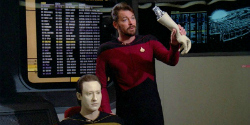
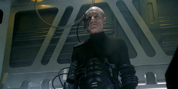
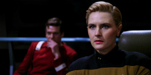
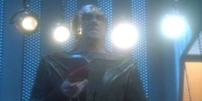
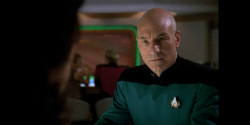
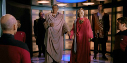

Top Missions
These are the top “must-watch” episodes, not necessarily the top 6 for quality, but the top stories that give you the best flavor of the series and its relatively unplanned story arcs. Just don’t forget that, like The Original Series, The Next Generation is a product of its time, and as such certain issues that writers wanted to bring to the screen not only necessitated allegory, but sometimes stretched it thin so as not to raise issues with censorship.
-
1. THE MEASURE OF A MAN
Data must defend his very existence as a living being when a scientist wants to take him apart to build an entire race of sentient androids. Due to various circumstances, Picard must play defense attorney to Data, while Riker must act as prosecutor, in the trial for Data’s life. This episode is everything great about Trek, as it deals with questions about race, equality, personal freedom, and the very nature of existence. It just doesn’t get any better than this.
-
2. THE BEST OF BOTH WORLDS
This is the episode that put TNG on the map as far as pop culture is concerned, and with good reason – it’s a riveting two-parter that puts the Enterprise and her crew in an unwinnable situation against their most powerful enemy, the Borg. Picard is taken by the collective and transformed into one of them, and Riker has to step up as captain and possibly kill Picard — a father figure — all while dealing with a new first officer of his own.
-
3. YESTERDAY’S ENTERPRISE
Not only does this alternate timeline episode give fans a proper farewell for Lt. Tasha Yar, whose death in season one was lackluster and pointless, but it also gives us Enterprise history by introducing us to the previous ship to go by that name, the Enterprise-C. This ep actually makes you buy into the idea that Picard sent a ship back in time and altered history on the word of his bartender, Guinan (Whoopi Goldberg). Oh, and the episode contains a very, very rare belly laugh from Worf.
-
4. CHAIN OF COMMAND
“THERE. ARE. FOUR. LIGHTS!”
You’ve seen the meme, and this is the episode from whence it came. A two parter that deftly juggles two very different stories, one, about the horrors of torture and the plight of POWs, and the other, about what it’s like to have an awful, humorless jerk as your boss, as the Enterprise must take on a new captain. Somehow, it all makes for a compelling two hours of Star Trek. Once again, Sir Patrick proves he’s an acting god in some of his most powerful work on the show.
-
5. TAPESTRY
The sci-fi/Star Trek version of It’s A Wonderful Life, in “Tapestry,” cosmic nuisance Q gives a dying Jean-Luc a chance to go back in time to his wayward youth, when he was more hooligan and a lot less scholar. It’s a wonderful, semi-autobiographic treatment from longtime Trek writer Ronald D. Moore (Next Generation, Voyager and Deep Space Nine), and a wonderful reflection on how the parts of our past we are most ashamed of help to make us who we are.
-
6. SAREK
In a rare reference to the original series, Spock’s father Sarek boards the Enterprise for one last mission at 202 years of age. He’s suffering from a Vulcan form of Alzheimer’s, which forces him to lose control of his emotions, something totally repellent to his species.
Picard steps in to mind meld with him and give him his fortitude (temporarily), and the scene where he has to unleash two centuries of buried emotions — love, regret, sadness, anger — is a powerhouse moment for Stewart.